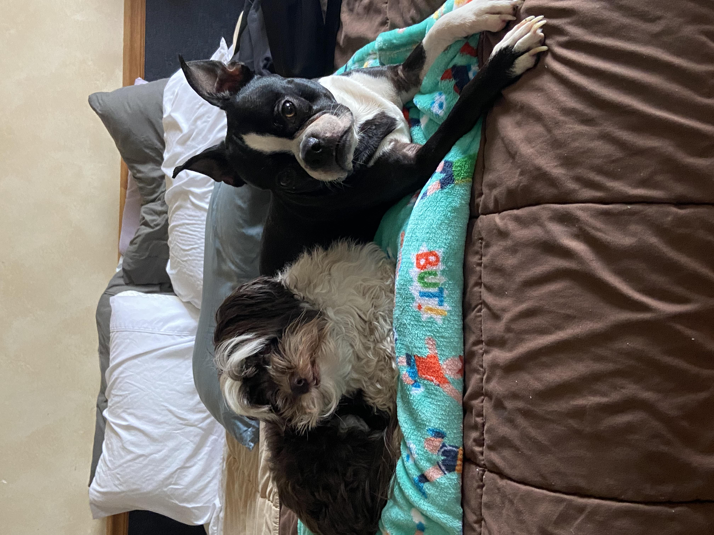

My name is James and I am studying computer science. I have one older brother as well as three younger sisters and I also have two dogs. My one dog is a havanese and he is about 8 years old, and the other is a boston terrier who is 5 years old.
I enjoy to be outside when the weather is nice and I enjoy hiking, playing frisbee golf, or walking my dog. I enjoy visiting new places and try to travel as much as I can. I also enjoy staying in and watching a movie or a show.
I have two dogs, Ace(left) who is a Havanese and Blue(right) who is a Boston Terrier.
